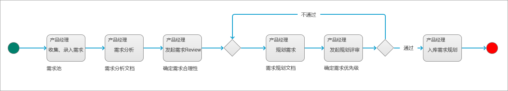
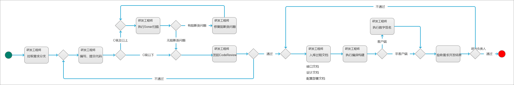

研发流程2.0
核心思想
整个研发流程的核心思想，是集成产品开发（Integrated Product Development），简称IPD。
这是一套标准化的产品产品开发模式，用于指导产品的整个生产过程。
整体流程
在前面的文章里提到过，一个标准的研发流程/模式，并不一定可以适用于所有公司，IPD也是如此。
研发流程管理部，以IPD为核心，结合公司实际业务情况，提出了项目开发流程，如下图所示：

立项阶段的主要活动：
- 市场调研
- 编写立项合同
- 立项决策
概念阶段的主要活动：
- 需求收集、分析
- 技术预研
- 概念阶段评审
计划阶段主要活动：
- 产品规划、设计、文档
- 技术架构设计
- 设计方案评审（产品、技术）
- 项目计划制定、评审
开发阶段主要活动：
- 技术详细设计
- 编码
- CodeReview
验证阶段主要活动：
- 验收、提测、测试、回归
- 编写测试用例、测试报告
发布阶段主要活动：
- 实验局
- CRM信息更新、ERP信息更新
- 营销材料
- 上市决策
生命周期阶段主要活动：
- 运营跟进
- 结项
说明：以上阶段活动是研发流程管理团队结合公司实际业务发布的项目开发流程，不等于标准的IPD流程。
阶段子流程
下面分别介绍项目研发流程每个阶段对应的子流程，也就是实际的产品研发过程中执行的流程。
立项阶段

上图所示，为新项目立项申请的流程，其中，具体的审核环节已经省略。
在产品研发模式这篇文章里，有说明产品的每个版本和研发项目是1对1的关系，所以，每个研发项目也都要有关联的产品，在立项申请时，如果其关联的产品不存在，那么说明本次立项开发的是一个新产品，就需要先进行新产品申请。
如果产品已经存在于产品库，那么直接走立项申请流程即可。
概念阶段

在概念阶段，主要是产品经理对于需求进行处理，最终输出经过业务需求方、项目团队确认的需求规划方案。
计划阶段

在计划阶段，产品经理先输出概要设计方案，主要包括：用户场景、需求用例、领域分析等内容。
基于产品经理输出的概要设计方案，产品经理需要进一步输出详细的产品设计方案，包括：产品原型、产品文档等内容；与此同时，项目的研发负责人需要基于产品经理的概要设计方案进行技术架构设计。
在产品经理的详细设计方案和研发负责人的技术架构设计方案都确认后，实际进行需求研发的工程师会进行详细的技术方案设计，包括：接口设计、数据库设计等。同时，项目经理也会制定详细的项目计划，包括项目每个阶段计划的起止时间、计划的资源投入等。
技术研发方案确定后，还需要去更新产品的配置管理，例如：技术实现方案，计划了10个可独立构建部署的组件，那么就会给这10个组件分别建立各自对应的代码库。
说明：通常来说，测试用例、测试计划，也会在设计环节来展开，但是由于公司实际运营的一些情况，导致测试相关的工作全部都在验证阶段来完成。
开发阶段

在开发阶段，研发工程师在开发每个需求的时候，需要单独拉一个需求分支进行开发；代码编写完成后，需要提交至公司统一的源代码仓库。
代码提交完成后，需要根据项目的等级，来判断是否要执行代码扫描，如果需要执行，则研发工程师到SonarQube里执行扫描（如果没有Sonar项目，则需要单独申请），扫描结果出来后，如果有阻断类问题，则需要修复阻断类问题。
所有的需求分支，在合并前都需要进行CodeReview，这个活动有研发工程师组织发起。
CodeReview通过后，研发工程师还需要编写并入库相关的过程文档，包括：接口文档、设计文档、配置部署文档等。这些文档一方面会归档到项目文档库，另一方面会随着产品包一起交付给客户。
在需求开发阶段的最后，研发工程师需要提交编译构建任务，执行构建，并将得到的制品文件，连同之前的过程文档和源代码，一起提交给研发负责人进行验收。如果是客户端产品，那么编译构建完成后，研发工程师还需要对制品文件进行数字签名。
验证阶段

在验证阶段，主要是项目的研发负责人提测需求，然后测试工程师拟制测试用例、测试计划，然后开始进行需求测试；测试过程中发现的BUG需要提交到项目所属产品对应的BUG库，由研发工程师进行修复；当测试结果达到要求时（例如：无P0、P1BUG），测试工程师就可以提交测试结果，由项目关键角色进行验收。
测试工程师提交的测试结果，需要包括：测试用例、测试计划、测试报告；这些材料最终也会随着产品包一起交付给客户。
发布阶段

发布阶段主要包括两个部分：实验局、正式发布。
实验局，就是组织小规模试运营，收集问题、处理问题，保证最后的正式发布不会出问题。
正式发布，则是将产品包正式交付给客户，同时，还要讲过程文档一起交付，例如：使用手册、测试报告等。
最后客户会进行需求验收，如果验收通过，那么交付成功，如果交付失败，则需要重新开启需求阶段。
理论上来说，发布和交付应该区分为两个阶段，但由于公司实际经营情况，发布和交付没有进行严格的区分，都统一到了一起。
生命周期阶段

项目生命周期阶段的子流程如上图所示，项目进入该阶段，表示项目已经成功通过了客户的验收。
在这个阶段，还需要对项目进行一段时间的运营，主要跟进和收集客户的使用情况，如果客户有反馈，那么产品经理需要评估反馈内容；如果没有反馈，或者反馈的意见不是需求和BUG，那么，项目经理就可以按照计划关闭迭代，结项。